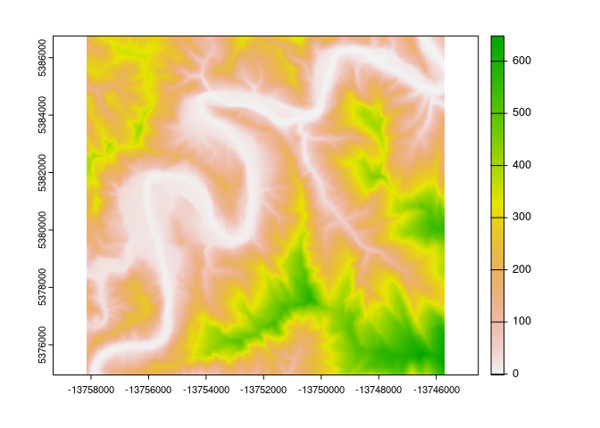
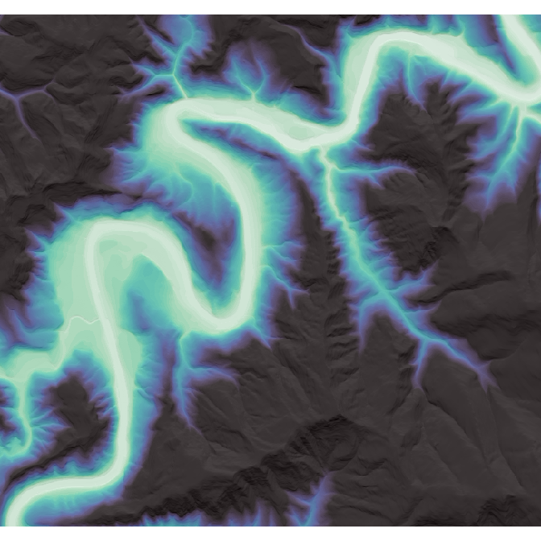

rrrem is an R port of the RiverREM package, letting you use packages in R’s spatial programming ecosystem to produce relative elevation models. Specifically, this package implements the river-retrieving and REM-producing elements of RiverREM; because R has such strong graphing support for raster graphics, the visualizations are not re-implemented (but are easily re-created using either base R or ggplot2).
Please note that this package was made extremely quickly and is effectively untested – there may be some sharp edges yet to be sanded down, and may be breaking changes on the horizon.
Installation
You can install the development version of rrrem like so:
remotes::install_github("mikemahoney218/rrrem")Example
rrrem creates relative elevation models (REMs) based upon user-supplied digital elevation models (DEMs) and river locations optionally downloaded via OpenStreetMap. As such, in order to use rrrem, we first need to get a DEM.
We can get high-resolution DEMs for areas in the United States by using the sf and terrainr packages, like so:
dem <- sf::st_as_sf(
data.frame(
y = c(43.412402, 43.489347),
x = c(-123.591623, -123.479736)
),
coords = c("x", "y"),
crs = 4326
) |>
sf::st_transform(3857) |>
terrainr::get_tiles() |>
purrr::chuck("elevation") |>
terrainr::merge_rasters()With our data downloaded, we’re ready to move on to actually using rrrem. The main workhorse of this package is the make_rem() function, which takes a DEM (and optionally, a line geometry reflecting your “target” river to visualize) and converts it into an REM. We can call that function like this:
And, well, that’s more or less what the package does. Kinda an anti-climax, that.
Rather than re-implement the visualization helpers from the RiverREM package, rrrem returns data in formats that the R spatial and visualization ecosystems will recognize, making it easy for users to hyper-customize their visualizations without needing to learn a new plotting function. For instance, the rem object we just created can be plotted quickly via terra::plot():
terra::plot(rem)
Or, with a little more elbow grease, we can combine it with other functions from terra to make more customizable visualizations:
dem <- terra::rast(dem)
hillshade <- terra::shade(
terra::terrain(dem, "slope", unit = "radians"),
terra::terrain(dem, "aspect", unit = "radians")
)
trimmed_rem <- rem
trimmed_rem[trimmed_rem > 200] <- 200
par(
oma = c(0, 0, 0, 0),
mar = c(0, 0, 0, 0),
mgp = c(0, 0, 0)
)
terra::plot(
hillshade,
col = grey(0:100/100),
legend = FALSE,
axes = FALSE,
oma = NA,
mar = NA,
xaxs="i",
yaxs="i"
)
terra::plot(
trimmed_rem,
col = viridis::mako(50, direction = -1),
legend = FALSE,
axes = FALSE,
add = TRUE,
alpha = 0.75
)
Code of Conduct
Please note that the rrrem project is released with a Contributor Code of Conduct. By contributing to this project, you agree to abide by its terms.